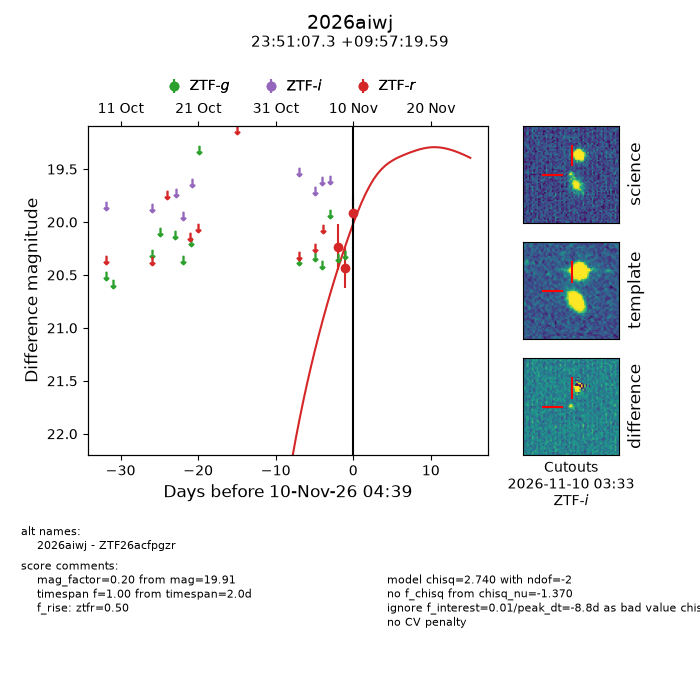
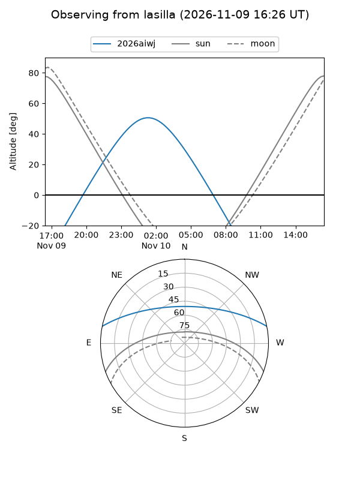
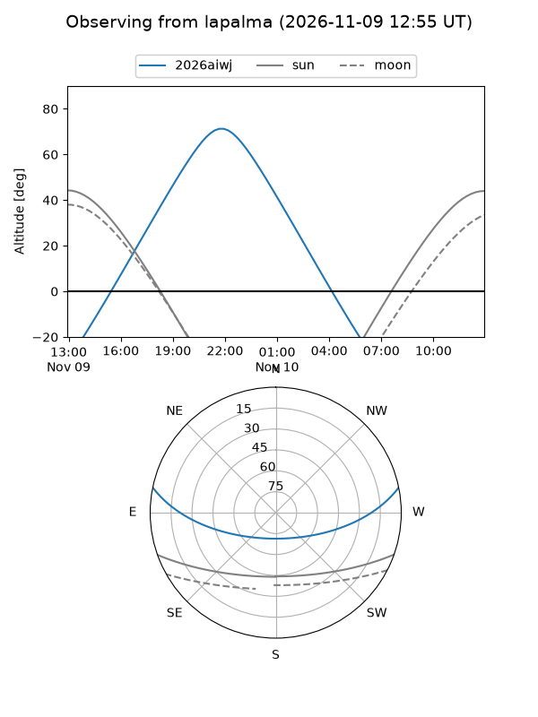
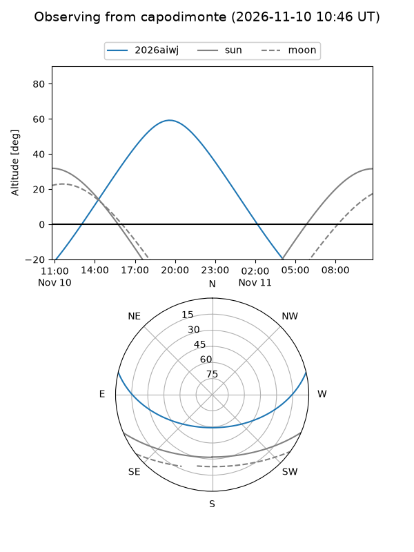
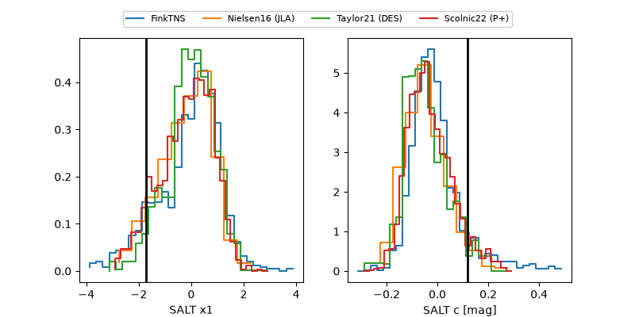

2026aiwj
Target 2026aiwj at 2026-11-10 04:42
Aliases and brokers:
FINK-ZTF: ztf.fink-portal.org/ZTF26acfpgzr
Lasair-ZTF: lasair-ztf.lsst.ac.uk/objects/ZTF26acfpgzr
ALeRCE-ZTF: alerce.online/object/ZTF26acfpgzr
YSE-PZ: ziggy.ucolick.org/yse/transient_detail/2026aiwj
TNS name: wis-tns.org/object/2026aiwj
Direct TNS query: direct search
alt names
ZTF26acfpgzr (ztf,fink_ztf)
2026aiwj (tns,yse)
Coordinates:
equatorial (ra, dec) = 357.7803,+9.95544
equatorial (HMS+DMS) = 23:51:07.27,+09:57:19.59
galactic (l, b) = (99.3682,-50.13637)
Flags:
peak dt: -8.8
Photometry:
last ztfr=19.91
3 ztfr detections
Lightcurve

Visibility



Additional plots
